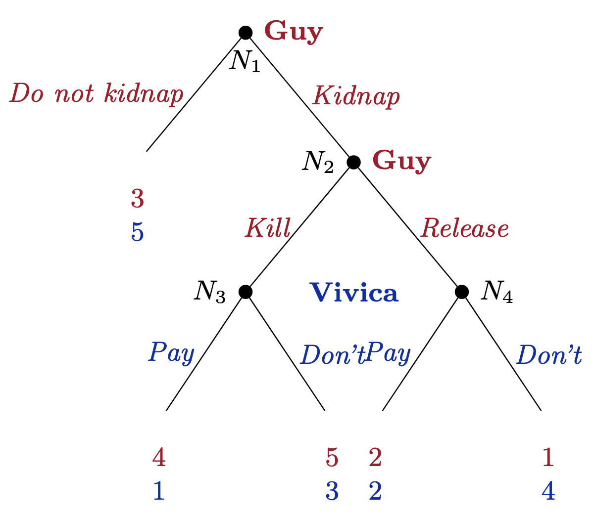
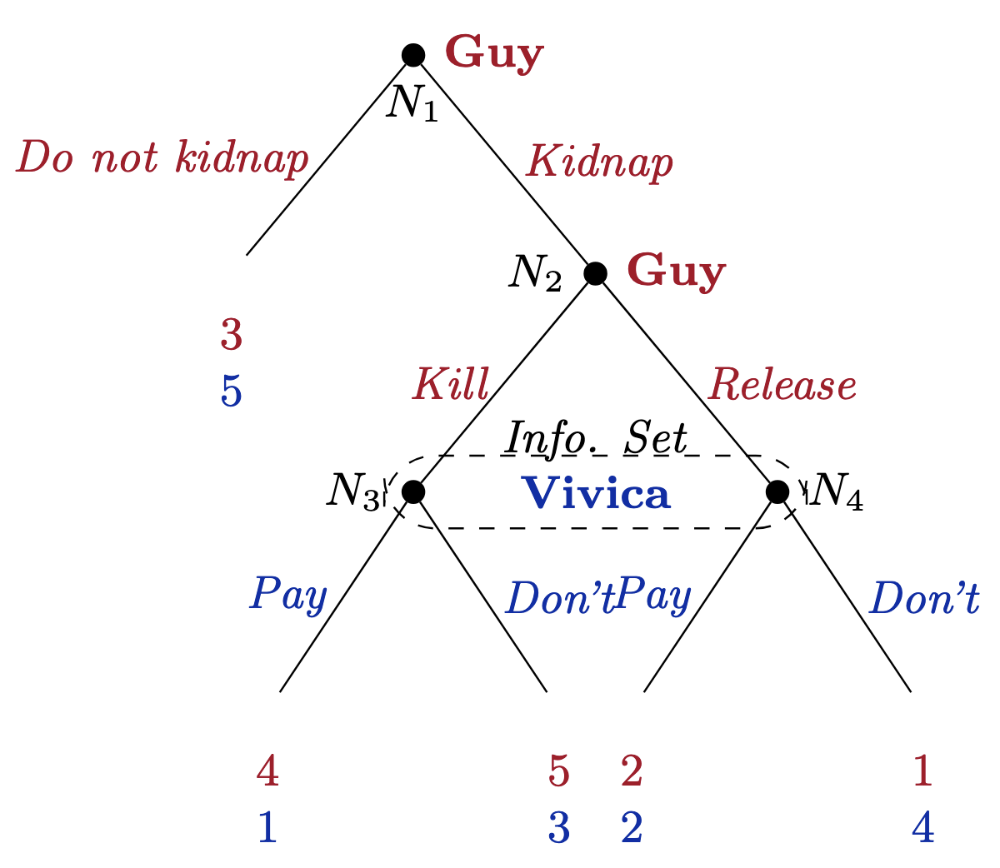
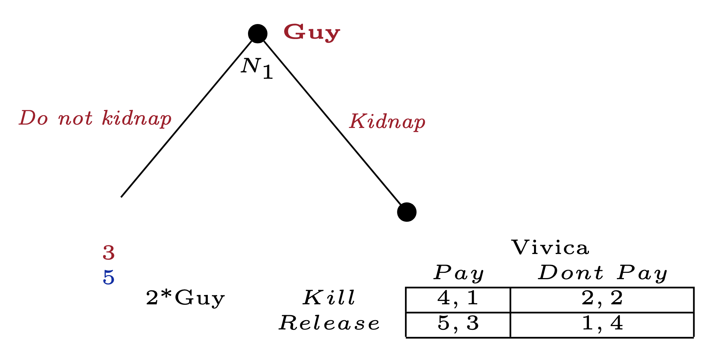
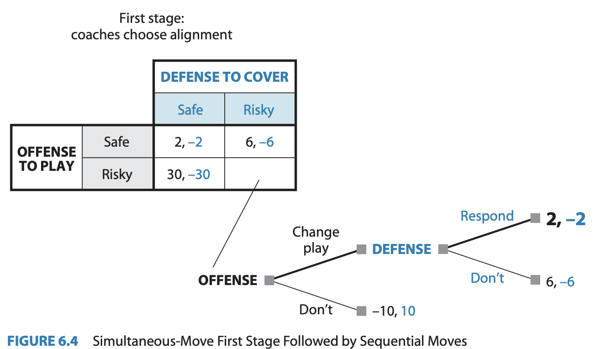
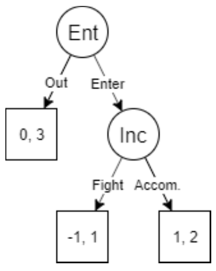
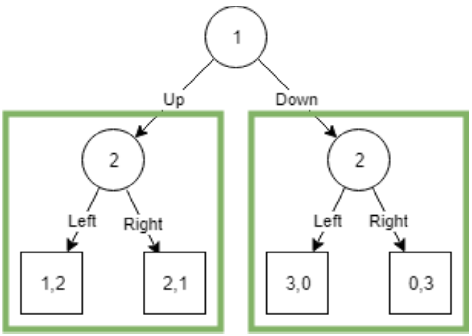

Introduction to Game Theory
Combining Sequential and Simultaneous Games
2024
Outline
Combining Sequential and Simultaneous
So far, we have only seen games that were either made up of only sequential or only simultaneous moves.
But realistically, many strategic interactions will contain both types of moves.
Learning to move between extensive and strategic form will help us examine more complicated games, as well as introduce us to the roll of information and beliefs which will become useful to later topics.
Original Kidnap Game
Modifying the game

When we first saw this game, Vivica could observe whether Guy had killed Orlando before she paid the ransom.
Now we will consider a variation of this game where Orlando’s fate is decided by Guy without Vivica knowing the result.
Kidnap Game with a simultaneous subgame
The dotted box around Vivica’s nodes \(N_3\) and \(N_4\) indicate that she can’t tell them apart.
They are part of the same information set; to Vivica, they are indistinguishable from each other.
Information set
is the set of information available to a player when making a decision. In the extensive form, every decision node belongs to one and only one info set, but multiple nodes may be in the same info set if the player at that node cannot tell them apart.
Using Strategic Form in Extensive Games
Consider the situation when Guy has already kidnapped Orlando.
List the remaining strategies for each player:
Vivica can decide to Pay or Don’t pay the ransom
Guy can either Kill or Release Orlando
Using Strategic Form in Extensive Games
With these strategy profiles, we can write this subgame out in its strategic form:
| Guy, Vivica | Pay | Don’t |
|---|---|---|
| Kill | 4, 1 | 2, 2 |
| Release | 5, 3 | 1, 4 |
Going from Strategic to Extensive
For every strategic form game, there are multiple extensive form game trees which can be drawn.


Another way to represent the entire Kidnap Game
A Strategic Form representation
Here is the game matrix for the entire kidnapping game:
| Vivica, Guy | \(dnk,k\) | \(dnk,r\) | \(kid,k\) | \(kid,r\) |
|---|---|---|---|---|
| \(pay\) | \(5,3\) | \(5,3\) | \(1,4\) | \(3,5\) |
| \(no~pay\) | \(5,3\) | \(5,3\) | \(2,2\) | \(4,1\) |
- Notice that the left half of the table represent the single don’t kidnap branch in the original tree
- What are the NE?
- (\(pay\), \(kid,k\)) is one
- (\(no~pay\), \(dnk,k\)) and (\(no~pay\), \(dnk,r\)) are also NE for this game table
NE vs SPNE
| Vivica, Guy | \(dnk,k\) | \(dnk,r\) | \(kid,k\) | \(kid,r\) |
|---|---|---|---|---|
| \(pay\) | \(5,3\) | \(5,3\) | \(1,4\) | \(3,5\) |
| \(no~pay\) | \(5,3\) | \(5,3\) | \(2,2\) | \(4,1\) |
What is different about the NE we found in the table and the NE we found through rollback?
The NE where Vivica plays \(no~pay\) are not Subgame Perfect because those actions are not credible threats
Games with both Simultaneous and Sequential Moves
Games with both types of moves
We separated games by the timing of moves in the first few lectures
it allowed us to introduce the relevant methods for each category
it also gave us the intuition behind the more general concept of Nash Equilibrium in a few different settings
but for many types of settings there are a mix of actions that are taken both sequentially and also taken simultaneously
Two-Stage Games & Subgames
CrossTalk and GlobalDialog are competing telecom companies
- Each could invest $10 billion in fiber-optic infrastructure
If only one company has fiber-optic, they get the entire market
A monopolist can charge high price \(\rightarrow\) earn $24 billion
or a low price to attract more customers \(\rightarrow\) earn $16 billion
Two-Stage Games & Subgames
CrossTalk and GlobalDialog are competing telecom companies
- Each could invest $10 billion in fiber-optic infrastructure
If both companies invest, they are locked in a simultaneous pricing game
If both set high price in the fiber-optic market, each gets $12 billion
If both choose low, they each get $8 billion
If one sets high and the other sets low,
the low-price setter gets the whole market and earns $24 billion,
the high price setter gets $0
Two-Stage Games & Subgames

Two-Stage Games & Subgames
We can use our tools from solving both game trees and game tables
first, notice that a monopolist will always set a High price
So we can replace the payoffs from the High branch into the first-stage table
Two-Stage Games & Subgames
Take a look at the table labelled Second stage:
| CrossTalk, GlobalDialog | High | Low |
|---|---|---|
| High | 2, 2 | -10, 6 |
| Low | 6, -10 | -2, -2 |
This is itself a complete game nested in the larger one
so it’s whats is called a subgame
we can solve it like we would any other game table
The NE of this subgame is (Low, Low)
place the Nash payoffs of -2, -2 into the first-stage table
Two-Stage Games & Subgames
First-stage game with payoffs filled in:
| CrossTalk, GlobalDialog | Don’t | Invest |
|---|---|---|
| Don’t | 0, 0 | 0, 14 |
| Invest | 14, 0 | -2, -2 |
Now we can solve for the NE of the whole game:
(Invest High Low, Don’t High Low)
(Don’t High Low, Invest High Low)
Two-Stage Games & Subgames
Football play game
In football, each team chooses a play to run in the huddle where the other team can’t observe
after this simultaneous action which is not observable to their opponent, the teams line up at which point the coach can observe how the defensive team are aligned and choose to potentially pick a different play accordingly
The defensive team could in also choose to respond to the offensive play changing their play
Two-Stage Games & Subgames
Change in the Method of Analysis
Illustrating Sim. Games using Trees
Martina Navratilova v. Chris Evert
| Evert, Navratilova | DL | CC |
|---|---|---|
| DL | 50, 50 | 80, 20 |
| CC | 90, 10 | 20, 80 |
Navratilova has volleyed the ball to Evert
Evert can send the ball down the line, DL, or crosscourt CC (a softer diagonal shot)
Navratilova has to simultaneously choose to set up to receive either type of shot
Illustrating Sim. Games using Trees
The simultaneous tennis game can also be represented as a tree

The information set indicates that Navratilova doesn’t know which shot before she has to choose how to receive
Adding Nature as a player
Even in cases which aren’t actually strategic, we can still use some of these tools

Changing the order of Moves
We found the NE will be (Deficit, High Rates) when this game is played simultaneously
| Congress, Federal Reserve | Low rates | High Rates |
|---|---|---|
| Balance | 3, 4 | 1, 3 |
| Deficit | 4, 1 | 2, 2 |
Changing the order of Moves
What about when the Fed moves first?

- We get the same NE
Changing the order of Moves
What about when Congress moves first?

now we get a different NE with congress playing their strictly dominated strategy
this is because when the Fed acts second, they can make a credible threat
Showing Seq. Games in Strategic Form
In the game where Congress moves first, they have two strategies, but the Fed has 4
| Congress, Fed | L if B, H if D | H if B, L if D | always Low | always H |
|---|---|---|---|---|
| Balance | 3,4 | 1,3 | 3,4 | 1,3 |
| Deficit | 2,2 | 4,1 | 4,1 | 2,2 |
Showing Seq. Games in Strategic Form
When we implemented rollback on the extensive form version, there was only one NE,
but here there are two:
{Deficit, always High }
{ Balance, (L if B, H if D) }
Both are NE of this game, but the second is a special type of NE
A subgame-perfect Nash equilibrium because it involves the Fed making their rational choice in every subgame.
Showing Seq. Games in Strategic Form
It’s not subgame-rational for the Fed to play High always because if the case where Congress already spent in deficit were to happen, the Fed’s only rational action would be to set low interest rates.
- We can say that the Fed’s High always strategy is not a credible promise
SPNE
The rollback method finds the subgame-perfect Nash equilibria of sequential games
- A complete plan of action such that at every node including off-equilibrium paths, it is still rational to stick to that original plan of action.
Market Entry Game
Consider this variation on the Entry Game, in which the Entrant is not as efficient as the Incumbent:

| Entrant, Incumbent | \(Fight\) | \(Accom.\) |
|---|---|---|
| \(Enter\) | -1, 1 | 1, 2 |
| \(Out\) | 0, 3 | 0, 3 |
- Note that this game has two NEs: (Enter, Accommodate) and (Out, Fight).
- Does it really make sense for the Incumbent to ever Fight?
Refining Nash Equilibrium
The more you think about it, the less sense this Nash equilibrium makes.
Entrant would stay Out if they really, truly believe that if they Entered, the Incumbent would Fight.
… but it’s hard to justify that belief when Fighting is costly for the Incumbent.
The Incumbent would have to somehow convince the Entrant that they really would Fight them,
- perhaps by making a credible threat.
We will talk more about this kind of strategic move later in the course.
We often don’t want this kind of Nash Equilibrium. To rule it out, we have the concept of subgame perfection.
Subgames
A subgame is a subset of an extensive-form game which, itself, is a complete game.
A subgame is a single node, and all of the branches and nodes descending from it,
- so it forms a complete game by itself
Examples of Subgames
Each of these green boxes contains a subgame.
Examples of Subgames
Each of these green boxes contains a subgame.
- The smaller boxes are trivial subgames, because they don’t contain any meaningful choices.
Examples of Subgames
A game is, technically, a subgame of itself, but it is an improper subgame.
- (Any subgames other than the entire game are proper subgames.)
Subgame Perfection
So why do we care about subgames?
subgame-perfect Nash equilibrium (aka SPNE), that does not produce the questionable equilibria we saw earlier.
All SPNE are also regular Nash equilibria.
But unique to SPNE, they have to also produce a Nash equilibrium in every subgame
SPNE in the Entry Game
There is only a single proper subgame in the Entry Game.
A SPNE of this game must have a NE in that subgame.
The only NE of the subgame is for the Incumbent to Accommodate.
SPNE in the Entry Game
- Given that the Incumbent Accommodates, the Entrant now faces a choice between staying Out, or Entering and being Accommodated.
- The Entrant’s best response is to Enter, and the SPNE is (Enter, Accommodate)
Rationality and Subgame Perfection
- To justify looking for SPNEs instead of NEs, we assume commonly known sequential rationality.
- Players are aware that other players are sequentially rational.
- Knowing that other players are sequentially rational, each player can predict the others’ rational behavior and chooses an action with the highest payoff at each of their decision nodes.
- Sequentially rational players choose their strategy on the fly, one move at a time, instead of all at once at the beginning of the game.
Finding SPNEs: Backward Induction
The method for finding SPNEs is straightforward—we’ve already been using it without spelling it out formally.
- Find all the decision nodes in the lowest row (assuming the tree goes top down)
- Find the optimal choice at each of these nodes, mark the corresponding branch (or erase/cross out all the other branches).
- If you just solved the game’s initial node, you’re done!
- Otherwise, identify all of the decision nodes in the next row up and return to step 2.
At each step, remember to take into account the optimal moves that you’ve already found lower in the tree.
General Method for Finding Nash Equilibria
Introduction
The method for finding the Nash equilibrium in a game with continuous strategies is general and applies to many types of games.
Key steps:
- Label each player’s strategy (e.g., \(x\), \(y\), etc.).
- Define each player’s payoff as a function of all players’ strategies.
- Maximize each player’s payoff by choosing their own strategy, holding the others constant.
Question: How does this method apply to real-world competition scenarios?
Step 1: Labeling Strategies and Payoffs
Suppose we have players 1, 2, and 3, with strategies labeled \(x\), \(y\), and \(z\), and their payoffs \(X\), \(Y\), and \(Z\).
For each player: \[ X = F(x, y, z), \quad Y = G(x, y, z), \quad Z = H(x, y, z) \]
Example: Price Competition
- \(x\) and \(y\) could represent the prices set by two firms, and the functions \(F\) and \(G\) represent their profits.
Question: Why is labeling strategies and payoffs essential for structuring a game?
Step 2: Maximizing Payoff Functions
Each player chooses their strategy to maximize their own payoff, considering the strategies of the others as fixed.
To do this, we take the partial derivative of each player’s payoff with respect to their own strategy and set it to zero.
Example:
For firm 1: \[ \frac{\partial F(x, y, z)}{\partial x} = 0 \]
Question: What does this partial derivative represent in terms of strategy adjustment?
Step 3: Solving for Best-Response Functions
Solve each equation to find the best-response functions. These tell each player the best strategy given what the other players are doing.
For firm 1, the best-response function could look like: \[ x = f(y, z) \]
This gives the optimal \(x\) for any given values of \(y\) and \(z\).
Step 4: Nash Equilibrium
The Nash equilibrium occurs where all players’ best-response functions intersect. Solve the system of equations: \[ x = f(y, z), \quad y = g(x, z), \quad z = h(x, y) \]
At this point, no player has an incentive to change their strategy.
Example:
In price competition, the Nash equilibrium is where both firms set prices that maximize their respective profits.
Interactive Question: Why is it important that no player has an incentive to deviate at Nash equilibrium?
Step 5: Handling Multiple Solutions
Some games may have multiple Nash equilibria, while others may have none in pure strategies.
Discussion:
- Multiple equilibria can occur in coordination games.
- Games without equilibria in pure strategies might require us to consider mixed strategies (covered in a later chapter).
Recap: General Steps for Nash Equilibrium
- Label each player’s strategies and payoffs.
- Maximize each player’s payoff with respect to their own strategy.
- Solve the system of best-response functions.
- Check for multiple equilibria and the possibility of mixed strategies.
Critical Discussion of the Nash Equilibrium Concept
Discussion of Nash Equilibrium
Now that you’ve learned what it means and seen it applied to several different games, what do you think about the concept of Nash Equilbrium?
- Does it make intuitive sense? Do you think people really reason through their best response to any possible situation?
- Is there anything relevant to strategic interactions you can think of that is left out of our models so far?
The Appeal of Nash Equilibrium
The Nash equilibrium is based on the idea that every player’s strategy should be the best response to the strategies of others.
Benefits of using NE:
In non-cooperative games, it makes sense that each player is making their best response to their opponent
If you can’t enforce any strategy onto your opponent, you should stick with whatever doesn’t make you worse off, given what your opponent chose.
In any situation which is not a Nash, there is some player who could have done better:
- I.E., an NE leaves no-one with any regrets
Some Potential Critiques of NE predictions
IESDS, Best-response functions may not be how players actually think
- But NE only describe the stable combinations of strategies, there are many ways of getting there: learning from experience, repeated play, intuition, etc.
Some Potential Critiques of NE predictions
IESDS, Best-response functions may not be how players actually think
Nash doesn’t explicitly take risk into account
with ordinal payoffs, we might leave out the incentive to play it safe to avoid very bad outcomes
but if we instead use cardinal payoffs, or expected utilities, we can still extend our models to those situations
Some Potential Critiques of NE predictions
IESDS, Best-response functions may not be how players actually think
Nash doesn’t explicitly take risk into account
NE don’t have to be unique
- If we care predictions, NE doesn’t always tell us what will happen, sometimes there can be multiple possible strategy profiles which are equally stable which means any one could happen depending how the game plays out
Criticism 1: Treatment of Risk
We’ve mentioned before how sometimes the strategies played in NE don’t line up with what might intuitively feel like the ‘safe’ strategies.
Criticism 1: Treatment of Risk
Let’s look an an example:
| Row, Column | A | B | C |
|---|---|---|---|
| A | 2,2 | 3,1 | 0,2 |
| B | 1,3 | 2,2 | 3,2 |
| C | 2,0 | 2,3 | 2,2 |
What’s the NE?
Criticism 1: Treatment of Risk
Let’s look an an example:
| Row, Column | A | B | C |
|---|---|---|---|
| A | 2,2 | 3,1 | 0,2 |
| B | 1,3 | 2,2 | 3,2 |
| C | 2,0 | 2,3 | 2,2 |
What’s the NE?
- (A, A)
Criticism 1: Treatment of Risk
| Row, Column | A | B | C |
|---|---|---|---|
| A | 2,2 | 3,1 | 0,2 |
| B | 1,3 | 2,2 | 3,2 |
| C | 2,0 | 2,3 | 2,2 |
But what happens if the other player mistakenly plays C?
Then it might make sense to choose the safe option of C
You could get the same payoff of 2, but ensure that you wouldn’t have a chance to get 0
- The idea of trembling-hand perfection takes this into account by allowing probabilistic errors in strategies.
Criticism 1: Treatment of Risk
What about this game?
| A, B | Left | Right |
|---|---|---|
| Up | 9, 10 | 8, 9.9 |
| Down | 10, 10 | -1000, 9.9 |
Let’s suppose that there is a small probability \(p\) that Player B will accidentally play Right > What is Player A’s expected utility of playing Up?
\[ EU_A(Up) = 9(1-p) + 8p \]
What is Player A’s expected utility of playing Down?
\[ EU_B(Down) = 10(1-p) - 1000p \]
So Player A should only play Down if:
\[ \begin{align} 10(1-p) - 1000p > & 9(1-p) + 8p \\ p > & \frac{1}{1009} \end{align} \]
Criticism 2: Multiple Equilibria
In some games, multiple Nash equilibria exist. This can create problems because: - It’s unclear which equilibrium the players will choose. - Some equilibria may not make sense in real-life situations.
Example:
| Dante, Jose | T4 | Metropol |
|---|---|---|
| T4 | 2, 1 | 0, 0 |
| Metropol | 0, 0 | 1, 2 |
- In coordination games like Battle of the Sexes, there are multiple stable outcomes.
Criticism 2: Multiple Equilibria
Another Example
Pick one player to be Boston, one player as San Francisco
Here are 9 cities which must be evenly divided between the two players:
- Atlanta
- Chicago
- Dallas
- Denver
- Los Angeles
- New York
- Philidelphia
- Seattle
You win if you evenly split this list between you without communicating, and without overlaps or missed cities
Criticism 2: Multiple Equilibria
Arriving at Specific NE
This last example shows the importance of shared background and culture in forming strategic beliefs for cases with multiple NE
So far, our theory have given us sets of NE which are stable given any set of realized beliefs
But it doesn’t help us exaplain how those beliefs might be formed
Evolutionary Game Theory adds tools to our basic toolkit to try to answer some of these limitations
Criticism 2: Multiple Equilibria
In the later chapters we will develop ideas to help narrow down the more general concept of NE
Refinements to NE
A refinement is a restriction on the more general assumptions needed for Nash Equilibria
Examples:
- mixed-strategy Nash equilibrium allows for probabalistic plays
- subgame-perfect Nash equilibria aka rollback equilibria are refinements in sequential games
- perfect Bayesian equilibrium has to deal with informations asymmetries
Criticism 3: Requirements of Rationality
One major criticism is that Nash equilibrium assumes:
Players have perfect knowledge of others’ strategies.
Players have rational preferences and know that their opponent is rational
Counter-Argument:
- What are some situations you can think of where these assumptions might break down?
Players might not know who they are playing against and what preferences they might have
Players might make mistakes and occasionally choose actions that don’t fulfill their rational best response
Criticism 3: Requirements of Rationality
Consider this game:
| Row, Column | C1 | C2 | C3 |
|---|---|---|---|
| R1 | 0, 7 | 2, 5 | 7, 0 |
| R2 | 5, 2 | 3, 3 | 5, 2 |
| R3 | 7, 0 | 2, 5 | 0, 7 |
What is the NE?
Criticism 3: Requirements of Rationality
Consider this game:
| Row, Column | C1 | C2 | C3 |
|---|---|---|---|
| R1 | 0, 7 | 2, 5 | 7, 0 |
| R2 | 5, 2 | 3, 3 | 5, 2 |
| R3 | 7, 0 | 2, 5 | 0, 7 |
What is the NE?
(R2, C2) is the only NE in this game
For this strategy profile, both players’ beliefs about the other player’s strategy are correct.
Column believes that Row will choose R2, so she chooses her best response of C2
Row believes that Column will choose C2, so he chooses his best response of R2
So in NE, each player’s belief matches their opponent’s best response
Criticism 3: Requirements of Rationality
| Row, Column | C1 | C2 | C3 |
|---|---|---|---|
| R1 | 0, 7 | 2, 5 | 7, 0 |
| R2 | 5, 2 | 3, 3 | 5, 2 |
| R3 | 7, 0 | 2, 5 | 0, 7 |
But we could use similar logic for this game even when beliefs are incorrect
We can justify Row playing R1 if she believes that Column will play C3
Row could beleive this if she believes that Column believes she is playing R3
And if she also thinks that Column believes that she is playing R3 because Column believes that Row believes that Column is playing C1
Rebuttal to Critics: Why Not Nash Equilibrium?
Game theorist Roger Myerson suggests: - “Why not Nash equilibrium?” If someone proposes an alternative strategy profile, that profile must be evaluated. - If it isn’t a Nash equilibrium, one of the players can improve by changing their strategy, disproving the alternative.
Interactive Question: How does this defense of Nash equilibrium answer critics’ concerns?
Alternative Concepts
Criticism has led to the development of alternative solution concepts, such as: - Evolutionary Stable Strategies (ESS): Strategies that persist over time through evolutionary pressure. - Correlated Equilibrium: Players coordinate their strategies based on signals they receive from a common source.
Discussion Prompt: Do you think alternatives like ESS or correlated equilibrium offer improvements over Nash equilibrium?
Conclusion
While Nash equilibrium has clear limitations, it remains a central concept in game theory. Alternative solution concepts may provide better insights into certain situations, but Nash equilibrium is still the starting point for analyzing many strategic games.

EC327 | Lecture 5 | Combining Games